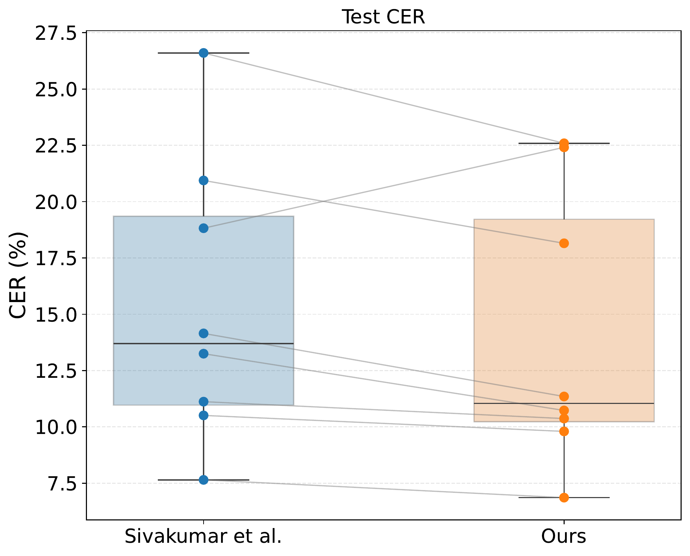
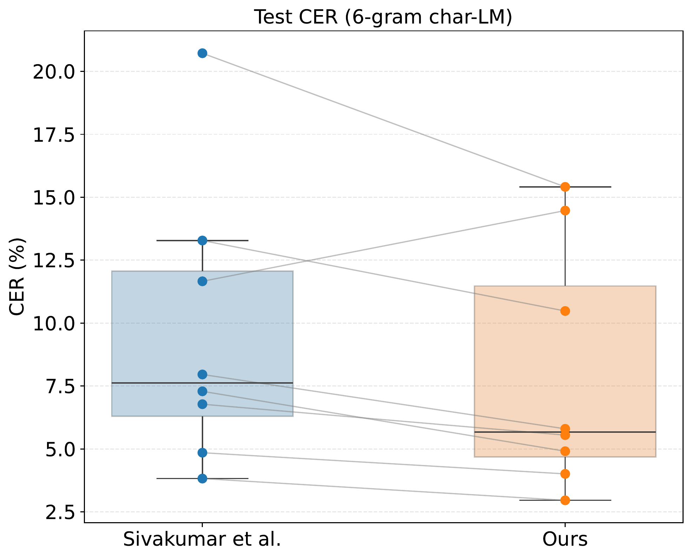

We present a high-bandwidth, egocentric neuromuscular speech interface that translates silently voiced articulations directly into text. We record surface electromyographic (EMG) signals from multiple articulatory sites on the face and neck as participants silently articulate speech, enabling direct EMG-to-text translation. Such an interface has the potential to restore communication for individuals who have lost the ability to produce intelligible speech due to laryngectomy, neuromuscular disease, stroke, or trauma-induced damage (e.g., radiotherapy toxicity) to the speech articulators. Prior work has largely focused on mapping EMG collected during audible articulation to time-aligned audio targets or transferring these targets to silent EMG recordings, which inherently requires audio and limits applicability to patients who can no longer speak. In contrast, we propose an efficient representation of high-dimensional EMG signals and demonstrate direct sequence-to-sequence EMG-to-text conversion at the phonemic level without relying on time-aligned audio.
For direct EMG-to-speech conversion (i.e., EMG → audio), see our EMG-to-speech demo.
Comparison between our method and emg2qwerty baselines (avg. over 8 subjects). Lower CER is better; improvement is statistically significant (p < 0.015). LM: language model.
| Model | No LM (Val) | No LM (Test) | 6-gram LM (Val) | 6-gram LM (Test) |
|---|---|---|---|---|
| Baseline (spectrogram) — emg2qwerty | 15.65 ± 5.95 | 15.38 ± 5.88 | 11.03 ± 4.45 | 9.55 ± 5.16 |
| Matrices σ(τ) (ours) | 14.33 ± 5.27 | 14.03 ± 5.27 | 9.61 ± 3.84 | 7.95 ± 4.54 |


Each dot represents an individual test subject; lines connect within-subject results across models. Our method improves performance for all subjects except user6.